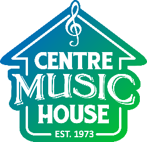
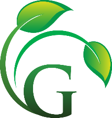
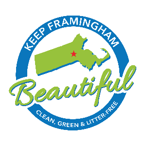
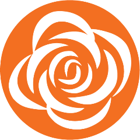

My Approach
I run the same monthly system for every client and adapt it to fit their needs. Here's who I work with, how the system runs, and the tools that make it work.

Who I work with
My clients know social media matters. They just don't have the hours to do it right. They're busy running something they're passionate about and serving their community. That's who I love working with: small local businesses and organizations with real heart.




What working together looks like
ClickTap any step to learn more